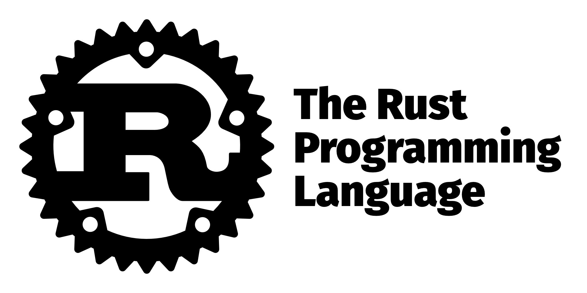
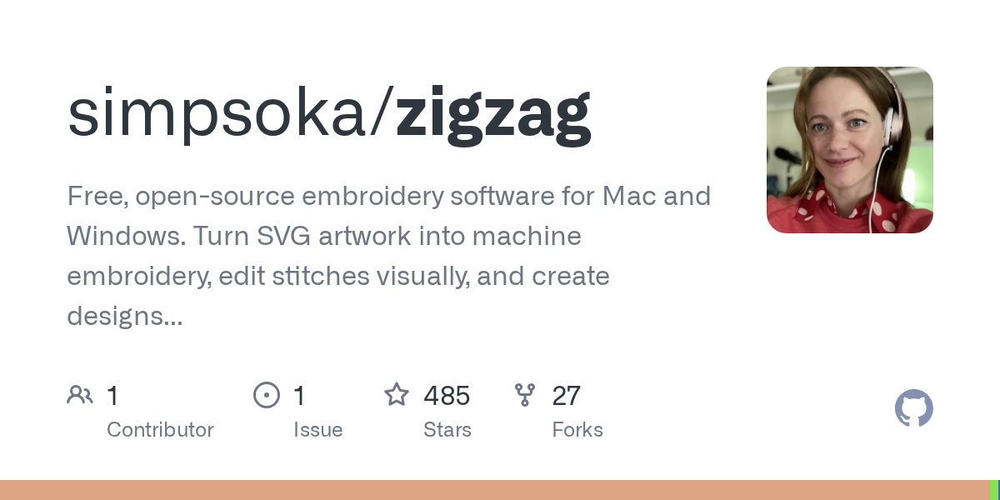
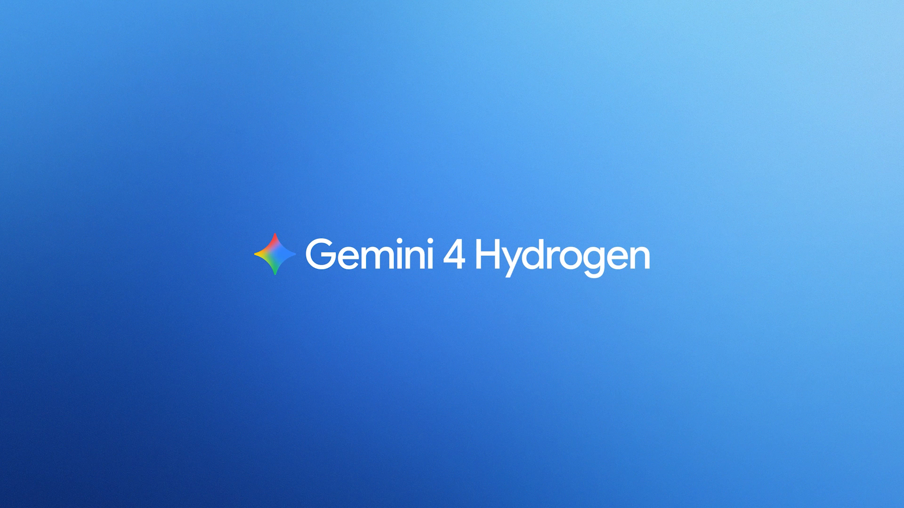
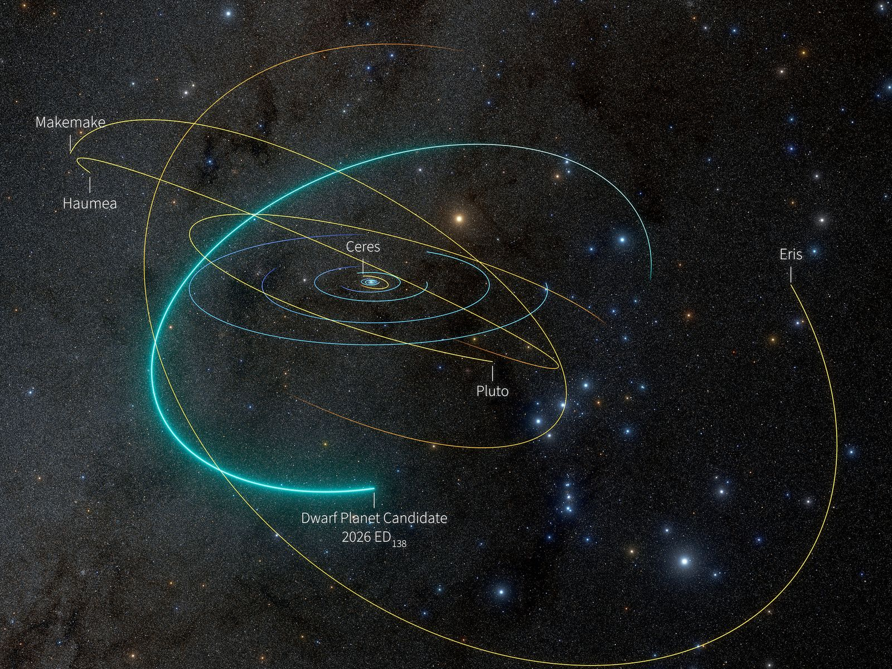
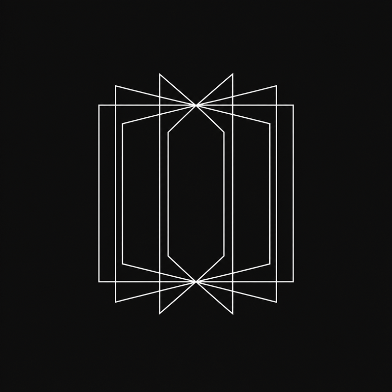

SANTA CLARA, CALIFORNIA — The board announced Jensen Huang's resignation as president, chief executive and director on Thursday morning, and by Friday's snapshot the thread underneath it had grown from 2,488 to 3,728 points and from 2,410 to 3,241 comments — again the most-discussed story on the page.[1][2] Chief financial officer Colette Kress, in the post since 2013, holds the interim chief-executive seat; former Synopsys chief Harvey Jones takes the board chair.[1] The crisis has cost the company $1 trillion in market value since the allegations surfaced, prompted investigations from U.S. lawmakers and the FBI, and raised the prospect of new export controls on chips, WIRED reports.[1]
Huang, 63, led Nvidia from its founding in 1993; his Sunday email to staff admitted being "unfaithful to [his] wife" and offered "no excuse."[1] The resignation followed reports of an alleged second affair, with a direct report, and Reuters has since reported another alleged relationship with an employee — an account WIRED files as "yet another." Huang has not commented beyond the Sunday email. In the hours after the announcement about two dozen employees posted support for him on LinkedIn; WIRED could identify no employee posts supporting the resignation.[1]
The thread — the Associated Press link behind it met this paper's bot wall — split on what the departure was actually for. "The affairs are not the reason he is being fired — NVIDIA has supposedly been skirting the export ban," argued the most-replied comment; another reader answered that a chief executive's relationship with a subordinate is itself "a serious, fireable offense," and a third asked the thread's open question plainly: "why now?"[2]
The degradation this paper logged Thursday evening as an Americas mailbox problem, at 285 points, had grown to 1,042 points by Friday's snapshot as the outage closed its first full day. What began near noon ET Thursday left workers unable to reach Outlook mail, Teams meetings and Copilot chats; Downdetector logged reports from 74 countries and territories within about an hour, and Microsoft executive Charles Lamanna said there was no indication of "malicious or cyber activity."[3][4][5]
Microsoft extended its email timeout window to 48 hours "to help protect delayed messages while service recovery continues," and reported recovery by region — "broader improvements in North America, sustained improvements across much of Europe, and encouraging recovery signals in Asia Pacific."[3] The reach ran from the U.S. House of Representatives to Workhorse Group, which postponed its earnings call, to UK police forces asking the public to telephone; OpenAI said Microsoft-connector problems left some ChatGPT tools not working "as expected."[3]
The thread quoted the status feed directly — "elevated load across multiple regions," with infrastructure being restarted and repaired, and a 9:02 p.m. UTC update describing a validated "alternative health check method" returning a subset of servers to service — while one operator reported "hour 8 and my work email for 15k+ employees is still down," and a self-described former Microsoft engineer explained that M365's deployment pipelines take weeks to roll changes out.[5]
Rust 1.100.0, announced 12 November, makes the never type — written !, the type of computations that never resolve to a value — nameable anywhere in the language, after what the release notes call "10 years and 5 failed stabilization attempts"; Infallible becomes an alias for it.[6][7] The stabilization carries a stated break: never-type fallback switches from () to ! in the 2015, 2018 and 2021 editions, a change the project says should be "largely unnoticeable" but can mark more code as unreachable.[6]
The release also stabilizes the core Allocator API, bringing custom allocators to Vec and Box; adds core::mem::DropGuard, which runs a closure on every exit path and supports rollback-style APIs through a dismiss method; and makes std::mem::conjure_zst the sanctioned way to construct zero-sized types.[6] Cargo gains unused-dependency reporting under a new [lints.cargo] table, a cache-collision fix that consistently applies the build-configuration hash — unblocking cache garbage collection and cross-workspace de-duplication — and stabilized "dependency cooldowns" that skip package versions published more recently than a configured age.[6]
The thread's top reply asked the perennial question — whether the compiler is any faster, one reader complaining of clearing 90 GB of temporary files with daily cargo clean runs — and the stable ABI kept its lobby; one reader counted the stabilized APIs the announcement doesn't list (bool::toggle, Box::map, str::trim_prefix and trim_suffix among them), and another closed the loop on the headline feature: "Finally, 'never' happened."[7]

An internal "suggestion box" post submitted before the resignation by a longtime Nvidia engineer — urging the board to weigh employee sentiment before acting — has drawn more than 1,600 comments, several asking board members to find a way to reinstall Jensen Huang, WIRED reports from internal correspondence.[1][8] "If you believe in the mission, bring back THE boss," one anonymous commenter wrote; another: "We are all humans and can make mistakes." One staffer sent a companywide email demanding transparency into the exit.[1]
The board, largely early investors and Huang confidants, had been expected by many employees to let its investigation conclude before any big change; instead Huang left as the inquiry began, and staffers are asking why.[1] One employee of two years, unauthorized to speak publicly, told WIRED the desire for reinstatement is widespread and put the board's choice plainly: "Nvidia is Nvidia because of Jensen."[1]
The thread's most-replied comment drew the line the internal comments mostly did not: "If it was one affair, this would hold. It is allegedly 3 and counting, and includes a likely spy from a rival nation."[8] Another reader argued the unwalkable part is the admitted relationship with the head of a company that "appears to exist only to evade ITAR restrictions" — impossible, he wrote, to believe Huang knew nothing of — and one commenter noted the workforce has also watched its holdings take "a pretty big pay cut this week."[8]
ZigZag, posted to Hacker News by its author as simpsoka, is a visual embroidery editor built in Rust, with Model Context Protocol support so AI agents can create and edit designs alongside the user: SVG artwork becomes stitches, is tuned in the editor, and exports as PES, DST, EXP, JEF or VP3 — or goes straight to a Brother Skitch (PP1) over Bluetooth.[9][10] The Mac build is signed and notarized; the Windows build ships as a zip that SmartScreen flags once.[9]
The planning engine carries the craft: satins wider than 7 millimeters auto-split into staggered stitches, fill hidden under later objects isn't sewn (keeping 0.5 mm of overlap), and travel stitches route out of sight — straight across, around an outline, or under what is sewn later — with thread trims only when nothing else works, up to 50 mm of travel.[9] Per-object sewing control sets where thread enters and leaves; a Connect bar converts would-be cuts into visible running stitches and counts the cuts saved as it is dragged.[9]
The thread supplied its own due diligence: one reader's deep dive found much of the machine communication rides on the open-source Respira library, and that the "$300" machine usually sells for $499 — the lower figure likely secondhand or on sale; others recommended Ink/Stitch as the incumbent and recalled paying over $1,000 for Hatch embroidery software.[10] The top comment, assuming a language model did the heavy lifting, called the project "one of the best examples" of such tools letting a user scratch his own itch.[10]

Google rolled Gemini 4 Hydrogen into its Antigravity coding environment alongside Orchestrator, a new dropdown option that pairs Hydrogen with the frontier Carbon for long-horizon work: Carbon opens read-only to explore dependencies and build a plan with explicit re-planning triggers, Hydrogen takes over to write edits and run tests, and friction hands control back.[11][12] On Terminal-Bench 4.1, Google says, the pairing reached near-Carbon success rates while consuming 24 percent less quota and completing 19 percent faster.[11]
Google positions Orchestrator against the static "model router" habit — guessing task difficulty from the first prompt and routing the whole task — which it says breaks down as agents run longer and need different capability at different stages.[11] Hydrogen standalone scores 51 on the Artificial Analysis Intelligence Index (Argon: 50, and 54 at the new xhigh setting) and 57 percent on Terminal-Bench 4.1 against 3.8 Flash's 18.2. Hydrogen reaches paid AI Pro and Ultra subscribers; Orchestrator (Carbon) is Ultra-only, with an Argon pairing for Pro.[11]
The thread's most-replied comment noted the naming came full circle — "Gemini Hydrogen" was a meme after Carbon shipped, "and they actually released a model named Hydrogen" — while one reader was "honestly surprised they only see 25% savings," claiming 60 percent from his own setup bridging a frontier model to a cheaper one, and others asked what the element names are for.[12]

Reuters reported Thursday — headline: "Former Nvidia CEO Huang had a relationship with a second employee, sources say" — the latest in the series of relationship reports that followed Huang's Sunday email admitting infidelity; WIRED, counting the suspected-intelligence-asset report and the alleged affair with a direct report that preceded the resignation, files the Reuters account as "yet another."[13][1] Huang has not commented since the Sunday email.[1] The Reuters link met this paper's bot wall; this account is set from the wire's headline, WIRED's reporting, and the thread.[14]
The thread's dominant note was timing rather than the allegation itself. "This seems like a coordinated hit, slowly releasing more and more information. What's really going on?" asked the most-replied comment; others wondered whether the information had been long known and released now "for some nefarious business reason."[14] A quieter question — whether such relationships are common at the board level of major companies and merely uncommon to surface — drew no answer.[14]
Sifting Vera C. Rubin Observatory data in Chile — in which he and colleague Kevin Napier had already catalogued more than 2,000 small bright objects — Smithsonian Astrophysical Observatory astrophysicist Matthew Holman flagged one dot that seemed big, then verified it with Rubin solar system lead scientist Mario Jurić across a decade of earlier images and photographic plates from 1937 in the Harvard plate stacks.[15][16]
The object, 2026 ED138, orbits 46 times farther from the sun than Earth and takes 281.1 years to complete a circuit.[15] Whether it joins the five recognized dwarf planets — Pluto, Eris, Makemake, Haumea and Ceres — turns on size, and brightness alone cannot settle it: estimates run 370 to 930 miles across, because a gleaming, icy, reflective body can look as bright as a much larger dull one.[15] Infrared measurement, with ALMA among the telescopes being lined up, or a stellar occultation can; "in the next few months it will be" easier to see, Holman says, "and people will try."[15]
The thread's expert wing arrived on schedule: a former professional orbit-computer linked an interactive orbit visualization of ED138 ("This is a big boy"), and the Pluto demotion re-ran its standard edition — one reader calling the dwarf-planet class correct and Ceres the proof.[16] A reader asking "Is this Planet X?" received the distinction the article itself draws: ED138 is a candidate dwarf planet, not the hypothesized unseen giant.[15][16]

Anthropic's status page logged "Elevated errors on claude.ai, Claude Code, and platform.claude.com" from 09:58 UTC on Friday, rated major impact and touching Claude Cowork and the Claude Console as well; the initial note named user authentication as the fault, a fix was deployed at 11:05, and the incident was closed as resolved at 11:58.[17] CNN's outage coverage had noted thousands of Claude users reporting issues on Friday morning by Downdetector's count.[3]
Readers logged sessions forced to re-login and failing with OAuth errors, and several asked whether it was fallout from the Microsoft outage that had also disturbed OpenAI's connectors; no connection was established.[18] One commenter's ledger was blunt about the day's relativity: two hours to resolve, "compare to Outlook (down for a day)."[18]
Edge0 released Edge0-145B and Edge0-120B with their inference framework: of 145 billion parameters, about 10 billion compute on each step, with every group of 64 sparse experts sharing two large matrices.[19] The engine pipelines three storage tiers — hot experts in GPU memory, an expert library of roughly 40 GB in system memory, about 48 GB of vocabulary data on the SSD — and schedules CPU and GPU together under speculative decoding, reporting 80-plus tokens per second on a laptop at 28 GB peak memory in its performance section, and a 29 GB measured peak in its comparison table — figures the post itself notes come from different setups.[19]
Its benchmark table — all from Edge0's internal evaluations — reads 64.6 on DeepSWE 1.1 (Qwen3.8-Flash-Next: 58.7), 90.4 on GPQA-Diamond against Claude Opus 4.6's 91.3, and 80.6 on IFBench to Claude's 62.5, with demonstrations including an explainer video and a Blender-built Manhattan scene, each produced within an hour.[19] The thread went straight to the fine print: the release is open weights rather than open source, one reader corrected, and its NVFP4 format as shipped confines it to Nvidia Blackwell hardware until other quantizations and engines arrive, another noted — leaving "a decent spec MBP," in a third's words, as the qualifying computer.[20]

LOST: email, second day. Microsoft has extended its timeout window to 48 hours; several UK police forces ask the public to telephone.
FOUND: one dwarf-planet candidate, 2026 ED138, 46 AU out on a 281.1-year orbit; claimants must first measure its diameter.
| Nvidia's resignation thread passes 3,700 points as 1,600 internal comments petition for Huang's return and Reuters logs another relationship; Microsoft's outage runs into day two across 74 countries; Rust stabilizes the never type; a dwarf-planet candidate surfaces 46 AU out. |
| Fresh stories | 8 |
| Follow-ups | 2 |
| Carried in digest | 0 |
| Combined points | 8,578 |
| Combined comments | 6,160 |
| Top score | 3,728 |
| Most-discussed | 3,241 cmts |
"A second employee." Reuters's headline counts a second employee; by WIRED's tally the report is the third allegation since Sunday — the suspected intelligence asset, the direct report whose reported affair preceded the resignation, and this one. Both counts appear in today's coverage; neither outlet reconciles them.
"In the Americas." Thursday's tracking, and Microsoft's first framing, placed the failure in the Americas; within an hour Downdetector carried reports from 74 countries and territories, and by Friday Microsoft was describing recovery region by region. The company says there is no indication of malicious activity.
"Open-source," on your own computer. Edge0's post says open-source; readers note the release is open weights, and that the NVFP4 format as shipped runs only on Nvidia Blackwell hardware. The post itself carries two peak-memory figures — 28 GB in its performance section, 29 GB in its comparison table.
"My $300 embroidery machine." A thread deep-dive finds that machine usually sells for $499, with the $300 price likely secondhand or on sale, and that machine communication leans on the existing open-source Respira library — the editor is new; the protocol work is not.
The morning paper leads with the aftermath of the Nvidia resignation — the thread has added 1,240 points since Thursday's evening edition — and carries one more follow-up: the Microsoft 365 degradation, up 757 points and now a two-day, 74-country outage. Eight stories are fresh, from Rust's never type to a dwarf-planet candidate beyond Pluto. The Associated Press and Reuters links met bot walls and the two status pages render only in a browser, so those accounts are set from WIRED and CNN reporting, the incident feeds' own data, and the threads. Every number is from the 14:00 UTC snapshot.
Methodology: snapshot of the Hacker News front page taken 13 November 2026 at 14:00 UTC (08:00 US Central) via the Algolia HN Search API; scores and comment counts are as of that moment. Candidate pool of 30 front-page items, deduplicated against this paper's previous four editions; two follow-ups admitted at ≥+40% and ≥+150 points since coverage (+50%, +1,240; +266%, +757). The Associated Press and Reuters articles resisted fetching; both stories are set from WIRED and CNN reporting and their threads. Microsoft's and Anthropic's status pages are set from their incident feeds and thread-quoted updates. Images are each story's own published card or article image, credited by hostname.